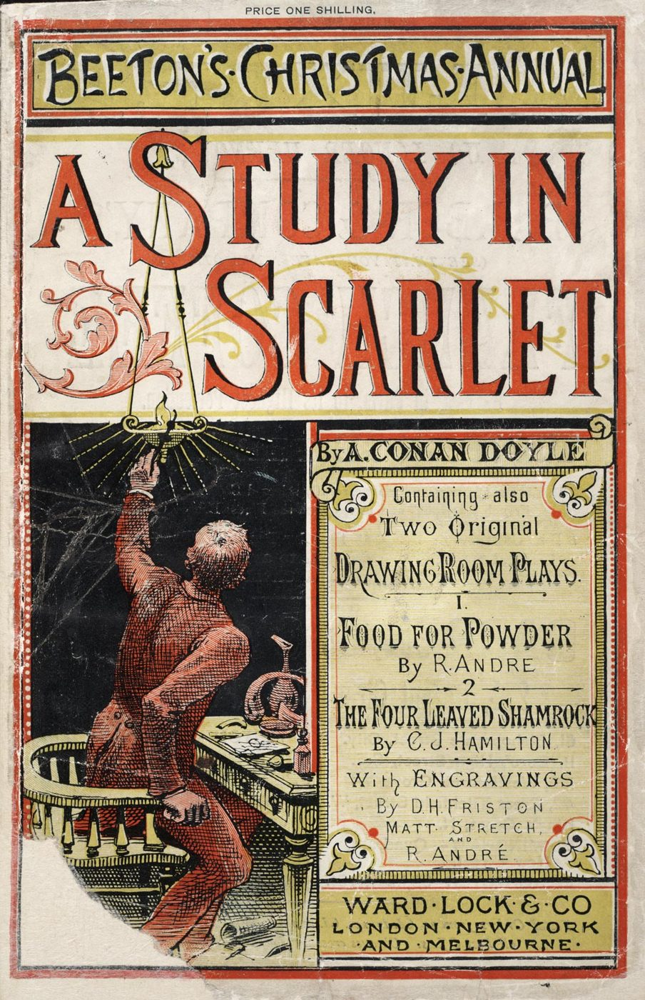
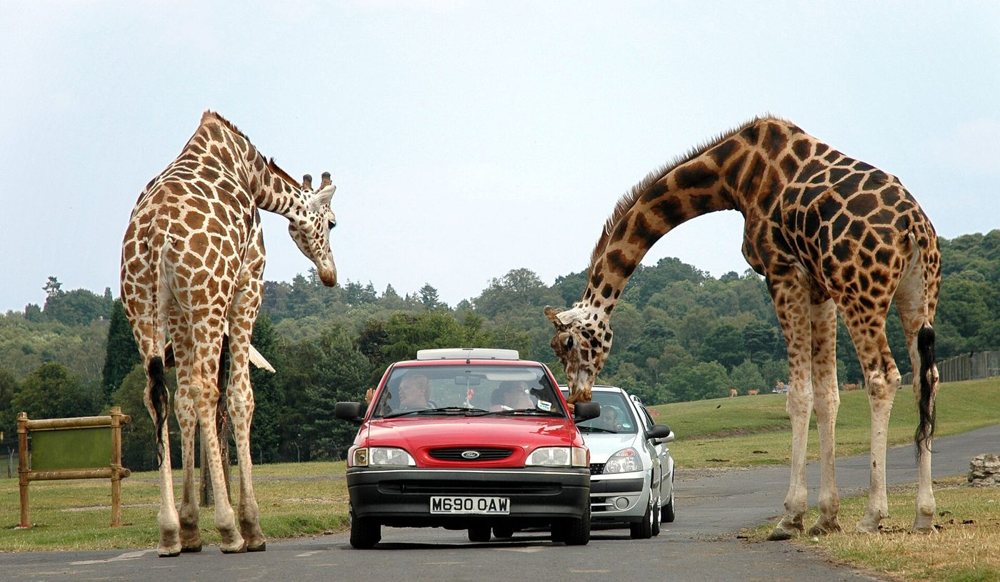

“

Trinity College Dublin
Coláiste na Tríonóide, Baile Átha Cliath
The University of Dublin
LI7862 · Linguistic Pragmatics
Week 10
Relevance Theory
Dr. Thomas Stephen
School of Linguistic, Speech & Communication Sciences
Semester 1 · 2026
Concepts and skills
Concepts
- Cognitive effects and processing effort; relevance.
- Cognitive and Communicative Principles of Relevance; optimal relevance.
- Ostensive-inferential communication; mutual manifestness.
- The comprehension procedure; mutual parallel adjustment.
- Explicature and implicature; implicated premises and conclusions; strong and weak implicature.
- Ad hoc concepts; narrowing and broadening.
Skills
- Derive the explicature of an utterance, listing each reference assignment, disambiguation and enrichment.
- Identify the implicated premises and conclusions of an indirect answer and grade each as strong or weak.
- Lay out a derivation table for an attested utterance.
- Write the ad hoc concepts in loose, hyperbolic and metaphorical uses in asterisk notation.
- Compare relevance-theoretic, Gricean and neo-Gricean analyses of one example.
- Tag effort cues and cognitive effects in a set of headlines or short messages.
Today
Empirical
- Underdeterminacy
- Enrichment
- Indirect answers
- Loose use
- Telling the time
Historical
- Sperber
- Wilson
- Relevance (1986)
- Code and inference
- Relevance Theory and Grice
Formal
- Effects and effort
- Relevance of an input
- Testing interpretations
- Ostensive communication
- Mutual manifestness
- Principles of relevance
- The comprehension procedure
- A derivation
- Explicature and implicature
- Lady Bracknell
- Said and implicated
- Strong and weak implicature
- Ad hoc concepts
- Narrowing and broadening
- Notation key
- Principles compared
- Some implicatures compared
Applied
- Analysing an item
- Headlines
- The curiosity gap
- Full stops
- Language models
- Defaults
- Timing the inference
Criticisms
- Criticisms and replies
This week
Readings
Grundy, P. (2008). Relevance theory. In Doing Pragmatics, 3rd ed., chapter 6. Hodder Education. Textbook
Wilson, D. & Sperber, D. (2004). Relevance theory. In L. Horn & G. Ward (Eds.), The Handbook of Pragmatics, 607–632. Blackwell. Classical
Sperber, D. & Wilson, D. (1987). Précis of Relevance: Communication and Cognition. Behavioral and Brain Sciences 10(4), 697–710. Classical
Noveck, I. & Sperber, D. (2007). The why and how of experimental pragmatics: the case of ‘scalar inferences’. In N. Burton-Roberts (Ed.), Pragmatics. Palgrave Macmillan. Contemporary
Scott, K. (2021). You won’t believe what’s in this paper! Clickbait, relevance and the curiosity gap. Journal of Pragmatics 175, 53–66. Contemporary
I
Empirical
STRAND 01 / 04 · LI7862 · Week 10
Explicit and implicit content
Reference, enrichment, indirect answers and loose talk.
(1)
It’s raining.
(2)
I’ve had breakfast.
(3)
I’ve been to Tibet.
Empirical
Underdeterminacy
(1). The speaker is understood as saying that it is raining in a particular place, usually where she is, although no word in the sentence names a place (Perry 1986).
(2) and (3). The two sentences have the same form, and the hearer supplies the difference in time (Sperber & Wilson 1986).
Underdeterminacy. The meaning a sentence encodes falls short of the proposition its speaker expresses, so inference is needed to work out what was said as well as what was implicated (Carston 2002).
Perry (1986), Proceedings of the Aristotelian Society · Sperber & Wilson (1986), Relevance · Carston (2002), Thoughts and Utterances
(4)
A mother to a child who is crying over a cut finger.You’re not going to die.
(5)
It will take some time to repair your watch.
(6)
He handed her the scalpel and she made the incision.
(7)
We spent the day in town and I went to Harrods.
Empirical
Enrichment
(4). Taken literally, the mother is telling the child that he will never die. She is understood as saying that he is not going to die from that cut (Bach 1994).
(5). Every repair takes some time, so what the sentence encodes is true of any repair and tells the customer nothing. The speaker is understood as saying that this repair will take longer than the customer might expect (Sperber & Wilson 1986).
(6) and (7). In (6) and is understood as and then, and the incision as made with that scalpel. In (7) the visit to Harrods, a London department store, is understood as part of the day in town (Carston 2002).
Bach (1994), Mind & Language · Sperber & Wilson (1986) · Carston (2002)
(8)
PeterDo you want some coffee?MaryCoffee would keep me awake.
(9)
PeterWould you drive a Mercedes?MaryI wouldn’t drive ANY expensive car.
(10)
Did you leave fingerprints?I wore gloves.
Empirical
Indirect answers
(8). Mary expects Peter to supply the assumption that settles it, whether she wants to stay awake.
(9). Peter supplies the assumption that a Mercedes is an expensive car, and concludes that Mary would not drive one.
(10). The answer is no, given the assumption that a person wearing gloves leaves no fingerprints (Ruis et al. 2023).
Wilson & Sperber (1981). All three answers are truthful and clear. Grice’s maxim of Relation tells the hearer to treat them as relevant, and leaves open which background assumptions the hearer is meant to use.
Sperber & Wilson (1986) · Ruis et al. (2023), NeurIPS · Wilson & Sperber (1981), in Werth (ed.), Conversation and Discourse
(11)
A diner to a waiter.This steak is raw.
(12)
Peter has said that he feels unfit for a cycling trip.MaryWe could go to Holland. Holland is flat.
(13)
Peter has asked what Mary thinks of Martin’s latest novel.MaryIt puts me to sleep.
(14)
A stranger asks the time. The speaker’s watch shows 3.08.It’s ten past three.
Empirical
Loose use
(11) and (12). The steak has been on the grill, and Holland has dykes and low hills. Taken strictly, both utterances are false, and neither is heard as a lie or as a mistake (Carston 2002; Wilson & Sperber 2002).
Holland. Strictly, Holland is two of the twelve provinces of the Netherlands, and in 2020 the Dutch government stopped using the name for the whole country, so (12) is loose twice over.
(13). Mary is not reporting that she falls asleep. Peter takes her to mean that the novel is extremely boring, without first trying out the literal reading and rejecting it (Wilson & Sperber 2004).
Grice (1975). The first maxim of Quality, do not say what you believe to be false, treats metaphor and hyperbole as flouts. It has no place for (14), which is false by two minutes, serves the asker as well as the exact time and implicates nothing (Wilson & Sperber 2002).
Carston (2002) · Wilson & Sperber (2002), Mind · The Guardian, 4 October 2019 · Wilson & Sperber (2004), The Handbook of Pragmatics
Empirical
Telling the time
van der Henst, Carles & Sperber (2002). Strangers in Paris and Lille were asked the time. One answer in five ends in a multiple of five minutes by chance, and rounders are estimated from the excess.
Rounding. People with digital watches rounded more than half the time, at some effort to themselves. People with analogue watches rounded less when the asker needed the exact time.
van der Henst, Carles & Sperber (2002), Mind & Language
II
Historical
STRAND 02 / 04 · LI7862 · Week 10
Sperber & Wilson
Anthropology, linguistics and the reaction to Grice, 1975 to 1995.
Historical
Sperber
Dan Sperber
born 1942
Rethinking Symbolism (1975). Sperber trained as an anthropologist and did fieldwork among the Dorze of southern Ethiopia. He argued that people interpret symbols by inference, and that there is no cultural code with which to decode them.
Apparently Irrational Beliefs (1982). The Dorze told him that leopards are Christian animals who keep the fasts of the Ethiopian Orthodox Church, and they still guarded their goats on fast days. Sperber took such beliefs to be held reflectively, for reasons the believer entertains, and not as plain knowledge of fact.
Sperber (1975), Rethinking Symbolism · Sperber (1982), in Hollis & Lukes (eds.), Rationality and Relativism
Historical
Wilson
Deirdre Wilson
born 1941
Presuppositions and Non-Truth-Conditional Semantics (1975). Wilson studied at Oxford, where she worked with Grice, and wrote her doctorate at MIT under Chomsky. Her first book argued for a pragmatic account of presupposition.
University College London. She taught linguistics at UCL, where her students included Robyn Carston and Stephen Neale. She has also published a novel, Slave of the Passions.
Wilson (1975), Presuppositions and Non-Truth-Conditional Semantics · Wilson (1992), Slave of the Passions
Historical
Relevance (1986)
Les ironies comme mentions (1978). Sperber and Wilson’s paper on irony, published in French, treated irony as a kind of mention. In On Grice’s Theory of Conversation (1981) they argued that the maxims could be replaced by a single principle of relevance.
Relevance: Communication and Cognition (1986). They built a theory of communication on a claim about cognition: attention and inference go to the inputs that promise the greatest effect for the least effort.
Second edition (1995). In a postface they divided the principle of relevance into a Cognitive and a Communicative Principle, the formulation used since.
Sperber & Wilson (1978), Poétique · Wilson & Sperber (1981) · Sperber & Wilson (1986, 1995), Relevance
Historical
Code and inference
Code model. A message is encoded into a signal and decoded by a receiver who shares the code. The model comes from Shannon & Weaver (1949) and was taken up in semiotics and linguistics.
Inferential model. After Grice (1957), a communicator provides evidence of her intention to convey a meaning, and the audience infers the meaning from that evidence.
Sperber & Wilson (1986). Verbal communication involves both. Decoding the sentence gives the hearer one piece of evidence about the speaker’s meaning, and inference does the rest.
Shannon & Weaver (1949), The Mathematical Theory of Communication · Grice (1957), The Philosophical Review · Sperber & Wilson (1986)
Historical
Relevance Theory and Grice
Grice (1957, 1975). Relevance Theory keeps two of Grice’s claims: that communication is the expression and recognition of intentions, and that utterances raise expectations which guide the hearer to the speaker’s meaning.
Co-operative Principle. Sperber and Wilson gave up the Co-operative Principle and the maxims. A speaker who is evasive or lying is still understood, so comprehension cannot rest on an assumption of co-operation.
What is said. For Grice, inference starts from what is said. For Sperber and Wilson, inference is already needed to work out what is said, as in (1) to (7).
Wilson & Sperber (1981) · Wilson & Sperber (2004)
III
Formal
STRAND 03 / 04 · LI7862 · Week 10
Effort and effect
Comprehension as a search for relevance.
Formal
Effects and effort
Positive cognitive effect. A worthwhile difference to a person’s representation of the world, such as a true conclusion.
Contextual implication. A conclusion that follows from an input and the context together, and from neither alone. I see my train arriving, look at my watch, recall the timetable and conclude that the train is late.
Strengthening and elimination. An input can also strengthen an assumption the person already holds, or contradict one and lead the person to give it up.
Processing effort. The effort of perception, memory and inference that it takes to derive the effects. A longer, rarer or more complex input takes more.
Wilson & Sperber (2004)
Mary dislikes most meat and is allergic to chicken. She rings her dinner-party host to ask what is on the menu.
(15)
We are serving meat.
(16)
We are serving chicken.
(17)
Either we are serving chicken or (7² − 3) is not 46.
Formal
Relevance of an input
Relevance. Other things being equal, the greater the positive cognitive effects of processing an input, the more relevant it is, and the greater the processing effort, the less relevant it is.
Sperber & Wilson (1986). The numbers are for illustration: the theory compares inputs and does not measure effects or effort in units.
Wilson & Sperber (2004) · Sperber & Wilson (1986)
Formal
Testing interpretations
(18)PeterDid you enjoy the film?MaryThe popcorn was good.
(18). Peter expects to learn whether Mary enjoyed the film. The first interpretation tells him nothing, and the second she could have said more cheaply. The third answers him, and he stops.
Wilson & Sperber (2004). Peter never tests the fourth and fifth, which might have yielded more. A speaker who meant them should have made them easier to reach.
Wilson & Sperber (2004)
Formal
Ostensive communication
Ostensive stimulus. A stimulus designed to attract an audience’s attention and to show that the communicator intends them to draw some conclusion from it. Leaving an empty glass where the host may notice it is not ostensive. Waving the glass at the host is.
Informative intention. The intention to inform an audience of something.
Communicative intention. The intention to inform the audience of one’s informative intention. Understanding succeeds when the audience recognises the informative intention, whether or not they go on to believe what they have been told.
A Study in Scarlet (1887). Sherlock Holmes greets Watson with You have been in Afghanistan, I perceive. He inferred it from a tanned face, pale wrists and a stiff arm, which Watson had offered as evidence of nothing.

Wilson & Sperber (2004) · Conan Doyle (1887), A Study in Scarlet
Formal
Mutual manifestness
Mutual knowledge. On the accounts of Lewis (1969) and Schiffer (1972), speaker and hearer each know that p, know that the other knows that p, and so on without limit. Sperber & Wilson (1986) object that no hearer could check an infinite series of conditions before interpreting an utterance.
Manifestness. An assumption is manifest to a person at a given time if the person is capable of representing it and accepting it as true or probably true. An assumption can be manifest without being known or even entertained.
Mutual cognitive environment. A set of assumptions that are manifest to several people, where it is also manifest which people share them. Communication changes the mutual cognitive environment.
Sperber & Wilson (1986) · Lewis (1969), Convention · Schiffer (1972), Meaning
Formal
Principles of relevance
Cognitive Principle of Relevance. Human cognition tends to be organised so as to maximise relevance.
Communicative Principle of Relevance. Every ostensive stimulus carries a presumption that it is optimally relevant. The principle states what every act of ostensive communication conveys, so speakers cannot follow it or break it.
Optimal relevance. An ostensive stimulus is optimally relevant to an audience if and only if (a) it is relevant enough to be worth the audience’s effort to process, and (b) it is the most relevant one that the communicator’s abilities and preferences allow.
(19)I have already written a third of the paper.
Clause (b). The hearer takes the speaker of (19) to have written only a third. Two thirds would have been more relevant, and nothing prevented her from saying so.
Sperber & Wilson (1995), Relevance, 2nd ed. · Wilson & Sperber (2004)
Formal
The comprehension procedure
Relevance-theoretic comprehension procedure. (a) Take the path of least effort in working out cognitive effects, and test interpretations in the order in which they come to mind. (b) Stop when the expectation of relevance is satisfied. An optimally relevant speaker would not make the hearer look further.
Subtasks of comprehension. The hearer forms hypotheses about the explicit content, the explicature; about the contextual assumptions the speaker intends, the implicated premises; and about the conclusions the speaker intends, the implicated conclusions.
Mutual parallel adjustment. The subtasks run in parallel. Each hypothesis is adjusted against the others until the whole interpretation satisfies the expectation of relevance.
Wilson & Sperber (2004)
(20)
PeterDid John pay back the money he owed you?MaryNo. He forgot to go to the bank.
Formal
A derivation
Peter’s hypothesisBasis
(a)Mary has said: hex forgot to go to the BANK1/BANK2.Decoding. The referent of he and the sense of bank are open.
(b)Mary’s utterance will be optimally relevant to me.The presumption that every utterance carries.
(c)It will be relevant by explaining why John has not repaid the money.The expectation raised by (b) and by Mary’s No.
(d)Forgetting to go to the BANK1 may make a person unable to repay money.The first assumption to come to mind that gives such an explanation: an implicated premise.
(e)John forgot to go to the BANK1.The first reading of the sentence that combines with (d): the explicature.
(f)John was unable to repay Mary because he forgot to go to the BANK1.Follows from (d) and (e) and satisfies (c): an implicated conclusion.
(g)John may repay Mary when he next goes to the BANK1.Follows from (f) and background knowledge: a weak implicature.
Table (12) of Wilson & Sperber (2004)
Formal
Explicature and implicature
Explicature. A communicated proposition that the hearer recovers by developing the decoded sentence meaning through inference. (20e) is the explicature of Mary’s answer.
Implicature. A communicated proposition that is not an explicature. Every implicature is an implicated premise, as in (20d), or an implicated conclusion, as in (20f).
Saturation and free enrichment. Saturation fills a slot that the sentence provides, such as the referent of he in (20). Free enrichment adds content that no word in the sentence calls for, such as from that cut in (4) (Carston 2004).
Higher-level explicature. A description of the speech act or attitude, with the explicature embedded in it. Mary’s answer in (20) also communicates that Mary is telling Peter that John forgot to go to the BANK1.
Wilson & Sperber (2004) · Carston (2004), The Handbook of Pragmatics
(21)
Lady Bracknell, notebook in hand, is questioning Jack, who wants to marry her daughter.Lady BracknellDo you smoke?JackWell, yes, I must admit I smoke.Lady BracknellI am glad to hear it. A man should always have an occupation of some kind. There are far too many idle men in London as it is.
Formal
Lady Bracknell
HypothesisBasis
(a)Lady Bracknell is glad to hear itx. A man should have an occupation. There are too many idle men in London.Decoding. The referent of it is open.
(b)Her reply will say how Jack’s smoking bears on his suitability.The expectation raised by an interview of a suitor.
(c)Lady Bracknell is glad that Jack smokes.Reference assignment: the explicature.
(d)Smoking is an occupation.Needed to connect (c) to the rest of the reply: an implicated premise.
(e)A man with no occupation is not a suitable husband.Supplied from far too many idle men: an implicated premise.
(f)Jack’s smoking counts in his favour.Follows from (c) to (e): an implicated conclusion.
Wilde (1895). The audience recovers premise (21d) without effort and finds it absurd. The comedy comes from a speaker who plainly holds it.
Wilde (1895), The Importance of Being Earnest
Formal
Said and implicated
Communicated contentGriceBachRecanatiRelevance Theory
The referent of he and the sense of bank in (20)what is saidwhat is saidwhat is saidexplicature
from that cut in (4), and then in (6)implicatureimpliciturewhat is saidexplicature
That Mary would not drive a Mercedes, in (9)implicatureimplicatureimplicatureimplicature
Carston (2004). Grice let context fix reference and resolve ambiguity in what is said, and assigned every other inference to implicature. Bach, Recanati and Relevance Theory each recognise a level of enriched explicit content and give it a different name.
Grice (1975), Syntax and Semantics 3 · Bach (1994) · Recanati (2004), Literal Meaning · Carston (2004)
Formal
Strong and weak implicature
Strong implicature. An implicature that the hearer has to recover for the utterance to satisfy the expectation of relevance. (20f) is strongly implicated: without it Mary’s answer explains nothing.
Weak implicature. One of a range of similar conclusions that the utterance encourages, none of which the hearer has to draw. (20g) is weakly implicated, and Peter takes part of the responsibility for it.
(22)John has a square mind.
Poetic effect. (22) weakly implicates that John is rigid, that he will not change his mind, that he is a man of principle, and so on. An utterance that is relevant mainly through such an array has what Sperber & Wilson (1986) call a poetic effect.
Wilson & Sperber (2004) · Sperber & Wilson (1986)
Formal
Ad hoc concepts
(23)HenryDo you want to go on working, or shall we go to the cinema?JaneI’m tired. Let’s go to the cinema.
Ad hoc concept. A concept built during comprehension from the concept a word encodes, with a narrower or a broader extension. It is part of the explicature.
Narrowing. In (23) Jane communicates TIRED*: too tired to go on working, and not too tired to go to the cinema (Noveck & Sperber 2007).
Broadening. RAW* in (11) covers food that is cooked too little to eat, and FLAT* in (12) covers land that is easy to cycle across.
Noveck & Sperber (2007), in Burton-Roberts (ed.), Pragmatics · Wilson & Sperber (2004)
(24)
I’m not drinking tonight.
(25)
Buying a house is easy if you’ve got money.
(26)
That bottle is empty.
(27)
Sally is a chameleon.
(28)
Ironing is the new yoga.
(29)
I don’t believe it – they’ve appointed another Chomsky.
Formal
Narrowing and broadening
UtteranceAd hoc conceptAdjustment
(24)I’m not drinking tonight.DRINK*: drink alcoholnarrowing
(25)… if you’ve got money.MONEY*: enough money to make buying a house easynarrowing
(26)That bottle is empty.EMPTY*: with nothing left worth pouringbroadening, by approximation
(27)Sally is a chameleon.CHAMELEON*: someone who changes to suit the companybroadening, by metaphor
(28)Ironing is the new yoga.YOGA*: an activity people take up to relaxbroadening, by category extension
(29)… another Chomsky.CHOMSKY*: a figure who dominates a fieldbroadening, by category extension
Wilson & Carston (2007). Narrowing, approximation, hyperbole, metaphor and category extension are outcomes of a single process of concept adjustment, guided by expectations of relevance. If the bottle in (26) is three-quarters empty, the approximation becomes hyperbole.
Wilson & Carston (2007), in Burton-Roberts (ed.), Pragmatics
Formal
Notation key
NotationMeaning
TIREDThe concept that the word tired encodes.
TIRED*An ad hoc concept built from TIRED. A second asterisk, TIRED**, marks a different ad hoc concept built from the same word.
BANK1, BANK2The concepts encoded by an ambiguous word: the financial institution and the river bank.
hexA pronoun whose referent has not yet been assigned.
Wilson & Sperber (2004) · Carston (2002)
Formal
Principles compared
PrinciplesInference
GriceCo-operative Principle; maxims of Quality, Quantity, Relation and MannerMaxims observed or flouted
HornQ principle and R principleTwo opposed forces, each limiting the other
LevinsonQ, I and M heuristicsDefault inferences from the form of the utterance
Relevance TheoryCognitive Principle and Communicative PrincipleOne procedure for explicit and implicit content
Grice (1975) · Horn (1984), in Schiffrin (ed.), Meaning, Form, and Use in Context · Levinson (2000), Presumptive Meanings · Wilson & Sperber (2002)
Formal
Some implicatures compared
SentenceHorn · LevinsonRelevance Theory
(30)Some of the students passed.Q · Q, scalarnarrowing to SOME*, some but not all, in the explicature
(31)I believe she’s in.Q · Q, clausalimplicature by clause (b): the speaker is not sure
(32)If you mow the lawn, I’ll give you five dollars.R · Iimplicated conclusion: no mowing, no five dollars
(33)She turned the key and the engine started.R · Ienrichment to and as a result in the explicature
(34)I don’t think she’ll come.R · Ienrichment to I think she won’t come in the explicature
(35)Black Bart caused the sheriff to die.Q · Mextra effort for extra effects: the killing was indirect
(36a)I broke a finger yesterday.R · Ienrichment to one of my fingers in the explicature
(36b)X is meeting a woman this evening.Q · Qimplicature by clause (b): not his wife or mother
Carston (1998). Relevance Theory treats most of what the I heuristic derives as enrichment of the explicature.
Horn (1984) · Levinson (2000) · Carston (1998), in Carston & Uchida (eds.), Relevance Theory · Noveck & Sperber (2007)
IV
Applied
STRAND 04 / 04 · LI7862 · Week 10
Relevance in use
Headlines, text messages, language models and an experiment.
Applied
Analysing an item
StepWhat to record
1Item and contextThe exact wording, its source and date, who produced it and for whom.
2Decoded contentWhat the words encode, with every open reference, ambiguity and gap marked.
3Expectation of relevanceWhat the audience is likely to want from the item at that point.
4ExplicatureEach reference assigned, sense selected, enrichment and ad hoc concept, then any higher-level explicature.
5ImplicaturesImplicated premises and implicated conclusions, each graded strong or weak.
6Effort and effectsWhat takes effort (length, marked forms, open references) and which cognitive effects repay it.
7ComparisonThe Gricean and the neo-Gricean analysis of the same item.
After the derivations in Wilson & Sperber (2004), The Handbook of Pragmatics
(37)
RTÉ News, 21 July 2023.UK Covid-19 inquiry to get Johnson’s WhatsApp messages
(38)
The Scottish Sun, 9 February 2000.Super Caley Go Ballistic, Celtic Are Atrocious
(39)
LADbible, 8 July 2024.People are only just realising the ‘hidden message’ in Adidas’ iconic logo
Applied
Headlines
Dor (2003). A newspaper headline is a relevance optimiser. It is written to give readers the greatest cognitive effect for the least effort, so that most of them can stop at the headline.
(37). Johnson is assigned to Boris Johnson and inquiry to the UK’s public inquiry into the pandemic, and to get is enriched to will be given. A reader who has followed the story supplies the premise that the messages had been withheld.
(38). The morning after Inverness Caledonian Thistle, then in the second tier, knocked Celtic out of the Scottish Cup, the echo of Supercalifragilisticexpialidocious cost readers some effort and repaid it with a pun that fitted the result. Celtic sacked their manager, John Barnes, two days later.
Ifantidou (2009). Readers choose which headlines to read by their expectations of relevance, and interpret headlines by building ad hoc concepts, such as BALLISTIC* in (38).
Dor (2003), Journal of Pragmatics · Ifantidou (2009), Journal of Pragmatics · RTÉ News, 21 July 2023 · The Scottish Sun, 9 February 2000
Applied
The curiosity gap
Scott (2021). A clickbait headline raises an expectation of relevance and holds back what would satisfy it, leaving a gap in what the reader knows that only a click will close.
Blom & Hansen (2015). In 100,000 headlines from ten Danish news sites, forward reference, as in This is why…, was used most by the more commercial and tabloid sites.
(39). The ‘hidden message’ presents its referent as identifiable when the reader cannot identify it, so the explicature stays incomplete. Only just realising implicates that most people have missed it, the reader included.
Downworthy (2014). Alison Gianotto’s browser extension rewrote the phrases that open curiosity gaps.
Scott (2021), Journal of Pragmatics · Blom & Hansen (2015), Journal of Pragmatics · LADbible, 8 July 2024
Applied
Full stops
Gunraj et al. (2016). 126 undergraduates rated how sincere one-word replies such as Okay, Sure, Yeah and Yup were. Replies ending in a full stop, as in (40b), were rated less sincere in text messages. In handwritten notes the full stop made no difference.
Marked form. A one-word reply in a text usually has no full stop, so a reply that has one departs from the expected form. The departure costs the reader attention, and the reader looks for effects that repay it, such as coolness or reluctance, as with (35) Black Bart caused the sheriff to die.
Gunraj et al. (2016), Computers in Human Behavior
Applied
Language models
(41)EstherCan you come to my party on Friday?JuanI have to work.
Ruis et al. (2023). Language models were asked whether 600 indirect answers like (41) and (10) meant yes or no. Each answer is a yes or a no only given an implicated premise, such as that people at work cannot be at a party.
Ruis et al. (2023) · George & Mamidi (2020), Procedia Computer Science
Applied
Defaults
Levinson (2000). Generalised implicatures are default inferences, drawn automatically from the form of the utterance and cancelled when the context is against them. Some is read as some but not all straight away, and the plain reading takes the extra step of cancelling.
Noveck & Sperber (2007). Some is narrowed only when the hearer’s expectation of relevance calls for it. The narrowed reading takes the extra step.
(42)Some giraffes have long necks.
Noveck (2001). In a study run in French, children of eight and of ten accepted sentences like (42) at rates of 85% and above, against 41% for adults.

Levinson (2000) · Noveck & Sperber (2007) · Noveck (2001), Cognition
Applied
Timing the inference
(43)Some elephants are mammals.
Bott & Noveck (2004). Adults judged sentences true or false. Those who rejected (43) were slower than those who accepted it and slower than on every control sentence. With 900 ms to respond, 72% of responses were True. With 3,000 ms, 56% were.
Grodner et al. (2010). In an eye-tracking task with more contextual support, the some but not all reading showed no delay, and the size of the cost is still disputed.
Experiment 3 of Bott & Noveck (2004), Journal of Memory and Language · Grodner, Klein, Carbary & Tanenhaus (2010), Cognition
V
Criticisms
LI7862 · Week 10
Criticisms
Objections to Relevance Theory.
Criticisms
Criticisms and replies
Levinson (1989). A review of Relevance argued that the theory gives no way of measuring effects against effort and so makes no clear predictions. Wilson & Sperber (2004) reply that it needs only comparisons, and that these can be tested by experiment, as with telling the time and with some.
Levinson (2000). A single principle misses the regularity of generalised implicatures, which arise in the same way across contexts and across languages. Relevance theorists reply that the regular cases are those where the same enrichment is relevant in most contexts.
Mey & Talbot (1988). The theory models communication between individual minds and leaves out the social relations, power and conventions that shape what speakers can mean.
Levinson (1989), Journal of Linguistics · Levinson (2000) · Mey & Talbot (1988), Journal of Pragmatics · Wilson & Sperber (2004)
Concepts and skills
Concepts
- Cognitive effects and processing effort; relevance.
- Cognitive and Communicative Principles of Relevance; optimal relevance.
- Ostensive-inferential communication; mutual manifestness.
- The comprehension procedure; mutual parallel adjustment.
- Explicature and implicature; implicated premises and conclusions; strong and weak implicature.
- Ad hoc concepts; narrowing and broadening.
Skills
- Derive the explicature of an utterance, listing each reference assignment, disambiguation and enrichment.
- Identify the implicated premises and conclusions of an indirect answer and grade each as strong or weak.
- Lay out a derivation table for an attested utterance.
- Write the ad hoc concepts in loose, hyperbolic and metaphorical uses in asterisk notation.
- Compare relevance-theoretic, Gricean and neo-Gricean analyses of one example.
- Tag effort cues and cognitive effects in a set of headlines or short messages.